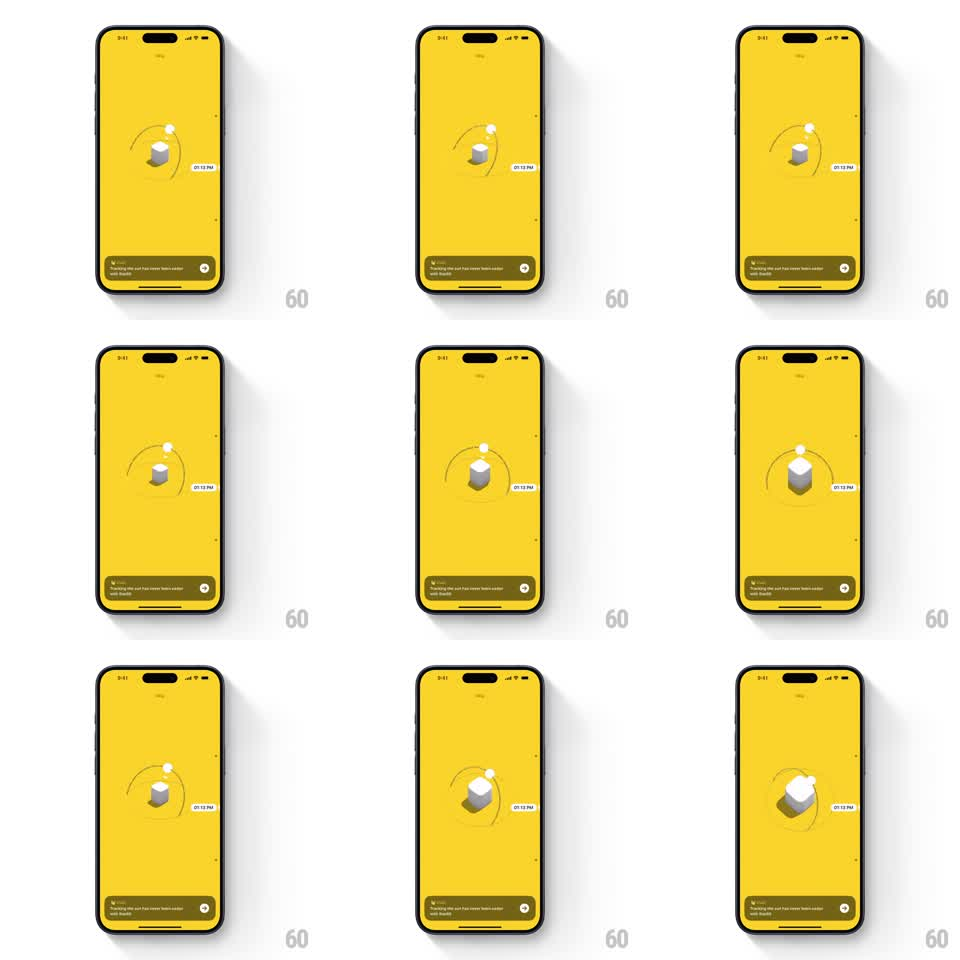

Media
Frame-by-frame

Rebuild this interaction 1:1: Sunlitt's gyroscope onboarding - a 3D scene (white monolith, orbiting sun dot) on a flat yellow field that responds to device tilt with camera rotation and live shadow casting.

Rebuild this interaction 1:1: Sunlitt's gyroscope onboarding - a 3D scene (white monolith, orbiting sun dot) on a flat yellow field that responds to device tilt with camera rotation and live shadow casting.
## Integration
Integration: stack-agnostic spec - springs given as stiffness/damping, timed motions as duration + curve; map every value to your framework and animation library of choice.
## Scene
Solid yellow screen. Center: a 3D diorama - a small white cube/monolith on the ground plane, a sun dot traveling a drawn orbit arc over it, and a time chip ("01:13 PM") tagging the sun. A dark toast card at the bottom carries the onboarding copy with a forward arrow.
## Motion spec
Pattern: gyroscope-driven 3D camera with live shadows.
- Device tilt drives the camera: roll and pitch map to orbit angles around the diorama (about +-25deg horizontal, +-12deg vertical), smoothed with a low-pass filter (~150ms response) so motion feels weighted, not jittery.
- The monolith's shadow re-casts in real time from the sun dot's position - shadow direction and length track the sun along its arc.
- The sun dot eases along its orbit (slow drift, ~20s per visible pass) with the time chip following at a fixed offset.
- On release of tilt, the camera springs back to neutral (spring stiffness ~120, damping ~14) - slow and calm.
- The toast card is exempt from parallax; it stays fixed to the screen.
## Calibration
- Tilt response needs dead-zone filtering - micro-tremors in the hand must not shimmer the scene.
- Shadow fidelity is the magic: a static shadow under a moving sun exposes the trick.
## Reduced motion
Static camera at a three-quarter view; sun drifts without tilt response.
## Don't miss
- The background is one flat saturated yellow - the 3D scene floats on it without a visible ground edge.
- The orbit arc line is drawn on the scene, thin and slightly transparent.